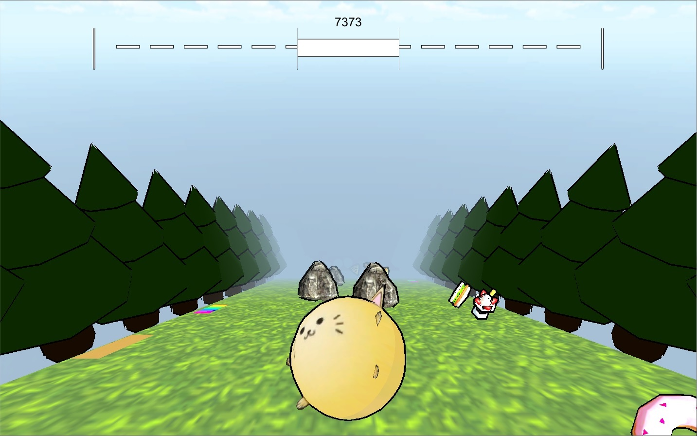

Hillbert
Hillbert is a procedurally generated endless runner, in which Hillber the cat rolls down an endless hill full of food and obstacles. When Hillbert collects food, he increases in size, capable of knocking larger obstacles out of the way. However, Hillbert must ensure he doesn't get large enough to burst! On the other hand, if Hillbert goes too long without eating, he will shrink until he disappears! I designed and programmed Hillbert in collaboration witha classmate. Try playing Hillbert through the link below!
